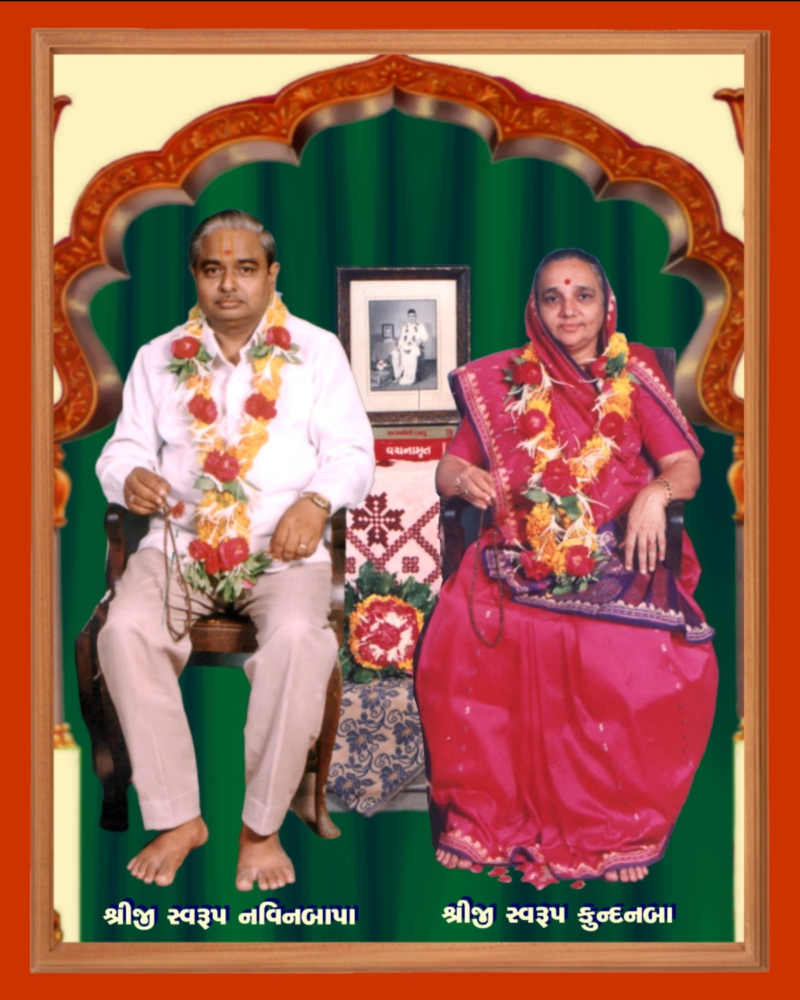
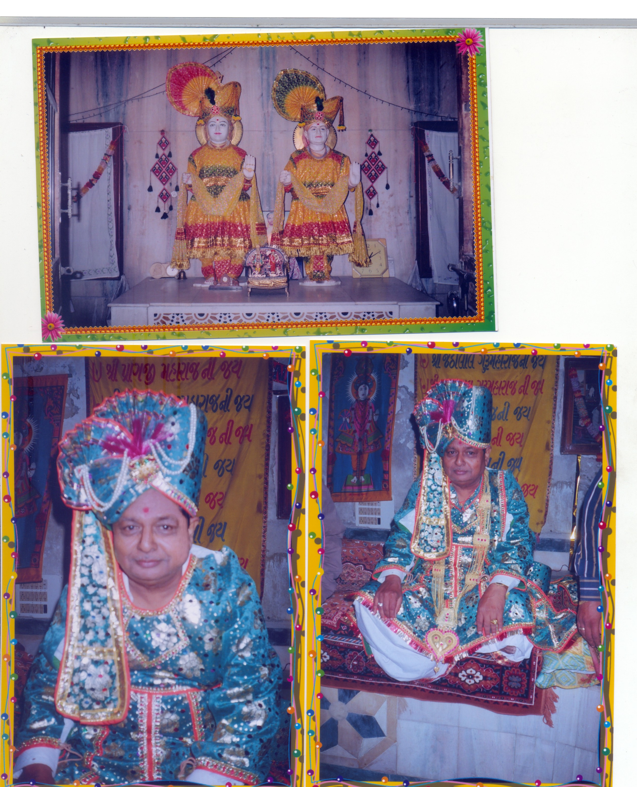

Shreeji Swarup Navinbapa

સ્વામિનારાયણ કથા વર્ણન
ગ્રંથ મહિમા
‘વચનામૃત’ પૂર્ણ પુરુષોત્તમ ભગવાન શ્રી સ્વામિનારાયણની પરાવાણી છે. પૂર્ણ પુરુષોત્તમ ભગવાન સ્વામિનારાયણની આ પરાવાણીને તેઓના ચાર વિદ્વાન સંતો - ગોપાળાનંદ સ્વામી, મુક્તાનંદ સ્વામી, નિત્યાનંદ સ્વામી અને શુકાનંદ સ્વામીએ ભગવાન સ્વામિનારાયણ પાસે પ્રમાણિત કરાવીને વચનામૃત સ્વરૂપે આપીને મહાન ઉપકાર કર્યો છે. શ્રીહરિ દિવસે કે રાત્રે જ્યારે પણ વાતો કરતા તે આ સંતો નોંધી લેતા. તેમાં સ્થળ, તિથિ, સમય, શ્રીહરિનો પહેરવેશ, પ્રશ્નોત્તરમાં સંમિલિત વ્યક્તિઓ વગેરે ઐતિહાસિક પ્રામાણ્યનો પ્રત્યક્ષ નમૂનો આ ‘વચનામૃત’ ગ્રંથ છે. ‘વચનામૃત’નો મુખ્ય પ્રતિપાદિત વિષય અધ્યાત્મજ્ઞાન છે. તેમાં ધર્મ, જ્ઞાન, વૈરાગ્ય અને ભક્તિ – એટલે કે એકાંતિક ધર્મનું સુપેરે નિરૂપણ છે. તેની સાથે કર્તા, સાકાર, સર્વોપરી ને પ્રગટ ભગવત્સ્વરૂપના માહાત્મ્યજ્ઞાન સાથે નિશ્ચયની મહત્તા, અક્ષરધામના પરમ સુખની છતી દેહે પ્રાપ્તિ, તેમાં આવતાં વિઘ્નોની ઓળખ, જીવોના આત્યંતિક કલ્યાણ માટે ભગવાન અથવા ભગવાનના અખંડ ધારક પરમ એકાંતિક સંતની આવશ્યકતા, અક્ષરધામ સિવાય અન્ય સર્વે લોક, તેના વૈભવ વગેરેનું નાશવંતપણું, પંચવિષયની તુચ્છતા, દોષરહિત થવા ને માયાપર થવા અક્ષરબ્રહ્મસ્વરૂપ સંતની અનિવાર્યતા વગેરે અગણિત વિષયો પર પરબ્રહ્મ પુરુષોત્તમ નારાયણનું શ્રીમુખનું અમૃત વરસ્યું છે. ભગવાન સ્વામિનારાયણે વેદો, ઉપનિષદો, રામાયણ-મહાભારત જેવા ઇતિહાસ ગ્રંથો, શ્રીમદ્ભાગવત આદિ અઢાર પુરાણો વગેરેનું દોહન કરીને આ વચનામૃતોમાં સારભૂત તત્ત્વ પીરસ્યુ છે. અનંત જીવોના કલ્યાણ માટે એકાંતિક ધર્મનું સ્થાપન કરીને ભગવાન શ્રી સ્વામિનારાયણે મુમુક્ષુઓને અધ્યાત્મપથનું આ અદ્ભુત અને અનન્ય જ્ઞાન પીરસ્યું અને એ જ્ઞાનના સાક્ષાત્કાર માટે એકાંતિક ધર્મના ધારક બ્રહ્મસ્વરૂપ સત્પુરુષની અનિવાર્યતા દર્શાવી. શ્રીહરિએ વચનામૃત ગઢડા પ્રથમ ૬૦માં કહ્યું: “આવી રીતનો જે એકાંતિક ધર્મ તે તો જે એવા નિર્વાસનિક પુરુષ હોય અને જેને ભગવાનને વિષે સ્થિતિ થઈ હોય તેને વચને કરીને જ પમાય પણ ગ્રંથમાં લખી રાખ્યો હોય તેણે કરીને નથી પમાતો. અને કોઈક સાંભળીને તેવી ને તેવી વાત કહેવા જાય તો કહેતા પણ આવડે નહિ. માટે જેને એકાંતિકના ધર્મમાં સ્થિતિ થઈ હોય તે થકી જ એકાંતિકનો ધર્મ પમાય છે.” સનાતન શાસ્ત્રોના સારભૂત અધ્યાત્મને સિદ્ધ કરવાનું સાધન શ્રીહરિએ પોતાના પરમ એકાંતિક સત્પુરુષમાં પ્રીતિ અને આત્મબુદ્ધિ એ જ બતાવ્યું છે (વચનામૃત વરતાલ ૧૧). એવા સત્પુરુષ અક્ષરબ્રહ્મ ગુણાતીતાનંદ સ્વામી હતા, ત્યાર પછી તેમની પરંપરામાં બ્રહ્મસ્વરૂપ ભગતજી મહારાજ, બ્રહ્મસ્વરૂપ શાસ્ત્રીજી મહારાજ, બ્રહ્મસ્વરૂપ યોગીજી મહારાજ, બ્રહ્મસ્વરૂપ પ્રમુખસ્વામી મહારાજ અને વર્તમાનકાળે પ્રગટ બ્રહ્મસ્વરૂપ મહંત સ્વામી મહારાજ છે. તેજના પ્રવાહરૂપ ‘વચનામૃત’ની આ દિવ્યવાણીને તો તેમના સંબંધને પામેલા આવા શુદ્ધ ગુણાતીત સત્પુરુષ જ ઝીલી શકે! એટલે આ વાણીનું યથાર્થ રહસ્ય સમજવું હોય તો એવા સત્પુરુષનાં ચરણકમળનું સેવન કરવું જ પડે. શ્રીહરિએ સ્વમુખે વચનામૃતમાં ઉદ્બોધેલા પોતાના દિવ્ય સિદ્ધાંતોને યથાર્થરૂપે સમજવા ગુણાતીત સત્પુરુષનો પ્રસંગ કરીએ. તેમના હૃદ્ગત અભિપ્રાયનું યથાર્થ પાન કરી કૃતાર્થ થઈએ!
Shreeji Swarup Navinbapa
Shreeji Swarup Navinbapa and Kundanbaa
Shreeji Swarup Navinbapa
